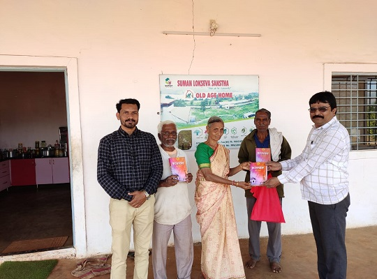
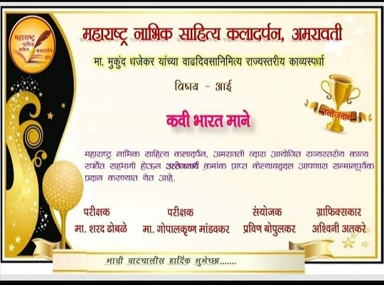
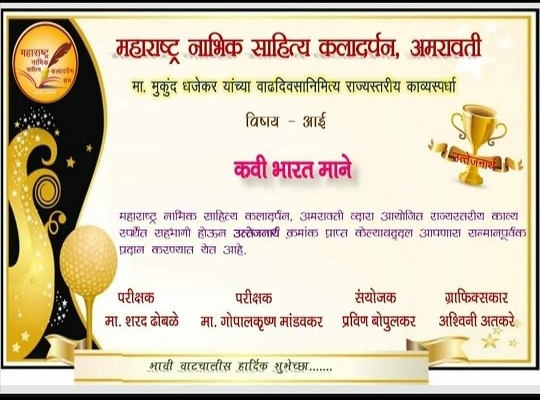

About Me
I am native of Pandharpur,currently living in pune. I have passed M.com from Pune University. Still i run m household by working as barber which is my father's traditional work.Suddenly i associated with literary field.Just for fun i kept on accumulating old memries and resented it in the form of book. This was my first book my autobiography 'Bhartayan' which liked by the people.
Autobiography Publication Ceremony
To get my autobiography published,i had organised a big publication ceremony in which,Abhay Tilak and senior Literary Professor V.B.Bodhe was Chief Guest. Head of WorldSmith Publication Mr.Mandar Ugar, Pradhuman Jahagirdar and wife of author Swati Mane are also present.
Author's first ever speech in publication.
Ghumaan Punjab Sahitya Sammelan
On 3rd April 2015 there was 88th Akhil Bhartiya Marathi Sahitya Sammelan in Ghumaan village in Gurdaspur district of Punjab.I particiated in it and i had also put up a stall.Some glimps of Ghumaan Sahitya Sammelan.
Bhosari Sahitya Sammelan
There i meet eldest litterateur mr.Ramchandra Dekhne. who is Chief Guest of Bhosari Sahitya Sammelan.
Chinchwad Sahitya Sammelan
The four-day literary meet, being held in Pimpri-Chinchwad for the ... The 89th Akhil Bharatiya Marathi Sahitya Sammelan there also i put up my book stall.
.jpg)
some imortant pics of author
Literary Ishwer Nandaure, Public Service Party Leader Mahavir Gadekar with author on Sahitya Kaladarpan ceremony
Gifting Books to the Old age home Suman Lokseva of PolegaonVasti.
With the Minister, Mr.Vijaybapu Shivtare and the present honorary.
With Sociologist Nivrutti Maharaj Deshmukh Indurikar.
Media-coverage
interview and some news-articles
After publication of autobiography, my interiew was publised in 'Aapli Chalwal' marathi newspaper. Articles are published in 'Kesari' and 'Prabhat' newsaper.
stories printed in books
My stories has also published in 'Diwali-Ank' Book and Special issue of 'Nabhik- Manch' book.
Awards
Eerything encourage me to write more. I kept on writting and join the literary field and ublished two collection of stories on the demand of people. And these two books are 'Chakwa' and 'Giran'.I recieved Lokkalyan Sahitya Ratna Award along with Manpatra. And Chakwa Kathasangraha has recieved Gyanankur Excellent Granth Manufacture Award of Divashi near Karad.


Athor while delevering speech in Gyanankur Excellent Granth Manufacture Award.
I got the award of Hadapsar Sahitya and Sanskriti Mandal. My some friends are poet after reading their poems i also wrote some poems and also particiate in some compititions to check my abilities about writting poems.
 

With Some Poet friends.
Fan Moment
I am still busy in producing literature. I have 5 unpublished literatures which are ready to
publish
1.He Bandh Reshmache
2.Khel Daiwacha
3.Ghusmat
4.Rang Mavaltiche
5.Parkyache Dhan
My some audio stories
Gavran Meva
Pahila Prem